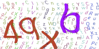

Ezcaptcha

Ezcaptcha 项目官方中文文档，本文档托管于 Github 。
概述
Ezcaptcha是一个强大而又简易的Python验证码图片生成库， 它不仅可以帮助用户在短时间内快速生成验证码图片，而且能自定义验证码的风格。
Ezcaptcha仍处于开发阶段
我们正在快速成长, 但是文档仍然需要完善, 软件本身也有一些不完善的地方。 2.0 版本计划在未来几周内发布。
方便快捷
仅仅一句话，就可以快速生成验证码图片。
自定风格
提供一个强大而又简单的自定义样式接口，你可以用它来创建更安全、更漂亮的验证码图片。
高安全性
内置多个扭曲和干扰算法，帮助您对抗一般甚至是深度学习图像识别。
获得
支持Python版本 >= 3.5
使用pip安装（推荐）：
pip install ezcaptcha
下载安装包：
Github主页: https://github.com/JiangCX3/Ezcaptcha
开始
> 最简单的方法
该函数可以让你在最短时间内生成出一张验证码图片，并返回为PIL.Image对象。
import ezcaptcha
img = ezcaptcha.easy_get()
img.show()

以下是 ezcaptcha.easy_get() 函数的完整参数：
ezcaptcha.easy_get(
width = 400,
height = 200,
length = 4, # 验证码长度
complexity = 5, # 复杂度，数值为1-10之间
)
complexity 参数在1~10之间。
更多关于本函数: ezcaptcha.easy_get()
> 一般的使用方法
使用get_img()生成一张验证码图片，然后再show()它。
import ezcaptcha
ezcaptcha.get_img().show()
> 自定义风格
Ezcaptcha提供了一个强大的自定义风格接口，您可以利用这些接口来创建更安全、 更漂亮的验证码图片。接口在使用上十分简单，它允许作为一个Dict对象直接传入get_img()函数， 也可以作为一个配置文件保存在您的项目中。
直接使用：
import ezcaptcha
styles = {
"background" : "#ffffff", # 背景颜色
"background-img": "", # 背景图片
# =====干扰纹理的样式配置=====
"disturbs": {
"fonts" : [ # 将会用到的字体
"Nunito-Regular.ttf",
],
"colors" : [ # 将会用到的颜色
"#FF9966",
"#663399",
"#003366"
],
"waves-amplitude": 10, # 波浪变形：波幅
"waves-wavelength": 20, # 波浪变形：波长
"emp-level" : 18, # 电磁干扰变形：等级
"zebra-level": 8, # 条状变形：等级
"zebra-width": 10, # 条状变形：条宽度
},
# ===== 验证文本的样式配置 =====
"text": {
"fonts" : [ # 将会用到的字体
"Nunito-Regular.ttf",
],
"colors" : [ # 将会用到的颜色
"#FF9966",
"#663399",
"#003366"
],
"waves-amplitude": 10, # 波浪变形：波幅
"waves-wavelength": 20, # 波浪变形：波长
"emp-level" : 18, # 电磁干扰变形：等级
"zebra-level": 8, # 条状变形：等级
"zebra-width": 10, # 条状变形：条宽度
}
}
ezcaptcha.get_img(styles=styles).show()
使用配置文件：
请参考 配置文件文档
注意：仅 ezcaptcha.get_img()支持Styles参数。
> 将图片保存到路径
import ezcaptcha
img = ezcaptcha.get_img()
img.save_to_path(path="./1.png")
> 获得图片的base64代码
import ezcaptcha
img = ezcaptcha.get_img()
img_base64 = img.get_base64()